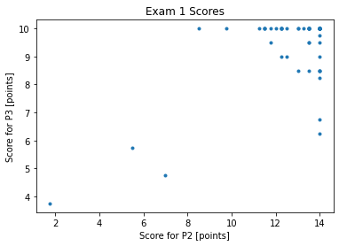
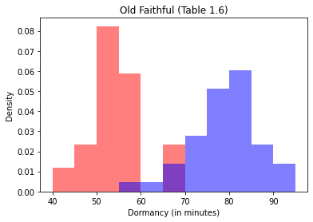
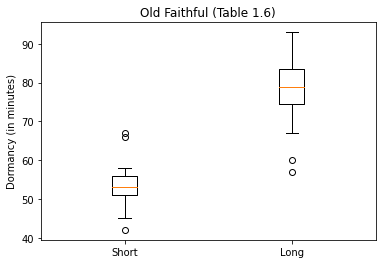
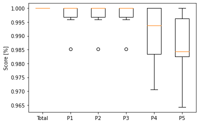

Visualizing Data
Contents
9.3. Visualizing Data#
Further Reading: §1.3 in Navidi (2015)
9.3.1. Learning Objectives#
After studying this notebook and your notes, completing the activities, asking questions in class, you should be able to:
Understand how to use scatter plots to display data.
Understand how to use histograms to display data.
Understand how to use boxplots to display data.
Understand the difference between bimodal and multimodal plots.
There are many ways to visualize data. This semester, we will focus on scatter plots, histograms, and boxplots. We will use matplotlib.
import matplotlib.pyplot as plt
import pandas as pd
import numpy as np
9.3.2. Scatter Plots#
We already learned how to make a scatter plot in matplotlib.
exam1_full = pd.read_csv("https://raw.githubusercontent.com/ndcbe/data-and-computing/main/notebooks/data/Exam_1_scores.csv")
# create empty dictionary
new_data = {}
new_data['Total'] = exam1_full['Total Score']
new_data['P1'] = exam1_full['1-A'] + exam1_full['1-B']
new_data['P2'] = exam1_full['2-A-1'] + exam1_full['2-A-2'] + exam1_full['2-B']
new_data['P2'] += exam1_full['2-C-1'] + exam1_full['2-C-2'] + exam1_full['2-C-3']
new_data['P3'] = exam1_full['3-A'] + exam1_full['3-B-1'] + exam1_full['3-B-2'] + exam1_full['3-B-3']
new_data['P4'] = exam1_full['4-A-1'] + exam1_full['4-A-2'] + exam1_full['4-B']
new_data['P4'] += exam1_full['4-B'] + exam1_full['4-C-1'] + exam1_full['4-C-2']
new_data['P5'] = exam1_full['5-A'] + exam1_full['5-B']
exam1 = pd.DataFrame(new_data)
# Make a copy of the DataFrame
exam1_norm = exam1.copy()
# Divide by the total number of available points
exam1_norm["P1"] = exam1_norm["P1"] / 8
exam1_norm["P2"] = exam1_norm["P2"] / 14
exam1_norm["P3"] = exam1_norm["P3"] / 10
exam1_norm["P4"] = exam1_norm["P4"] / 17
exam1_norm["P5"] = exam1_norm["P5"] / 14
exam1_norm["Total"] = exam1_norm["Total"] / 60
# Create scatter plot
plt.plot(exam1.P2,exam1.P3,marker='.',linestyle=" ")
plt.xlabel("Score for P2 [points]")
plt.ylabel("Score for P3 [points]")
plt.title("Exam 1 Scores")
plt.show()

Class Activity
Why do these data appear to exist on a grid?
9.3.3. Example: Old Faithful#
To illustrate key concepts for plotting, we will explore Table 1.6 in Navidi (2015).
old_faithful = pd.read_csv('https://raw.githubusercontent.com/ndcbe/data-and-computing/main/notebooks/data/table1-6.csv')
old_faithful.head()
| Dormancy | Eruption | |
|---|---|---|
| 0 | 76 | Long |
| 1 | 80 | Long |
| 2 | 84 | Long |
| 3 | 50 | Short |
| 4 | 93 | Long |
This data set has two columns:
The duration of dormant periods (in minutes).
Whether the previous erruption was short or long.
Home Activity
Take a look at the nicely formatted table in the textbook (pg. 32).
9.3.4. Histogram#
Let’s visualize the distribution of dormant periods using a histogram.
plt.hist(old_faithful.Dormancy)
plt.xlabel("Dormancy (in minutes)")
plt.ylabel("Count")
plt.title("Old Faithful (Table 1.6)")
plt.show()

The horizontal axis of the histogram shows the continous variable of interest. The vertical axis shows the number of observations in each bin. By default, matplotlib.pyplot uses equal size bins and automatically determines the number of bins. We can, of course, override these options.
https://matplotlib.org/3.1.0/api/_as_gen/matplotlib.pyplot.hist.html
https://matplotlib.org/3.1.0/gallery/statistics/hist.html
For example, let’s use 11 bins that go from 40 to 95 minutes to match the textbook. Let’s also make the bins 50% transparent (alpha=0.5). Finally, we will set density=True to normalize by the number of observations and set the color to purple.
plt.hist(old_faithful.Dormancy, bins=11, range=(40, 95),alpha=0.5,density=True,color='purple')
plt.xlabel("Dormancy (in minutes)")
plt.ylabel("Density")
plt.title("Old Faithful (Table 1.6)")
plt.show()

This plot is bimodal. There is one mode between 50 and 55 minutes and a second mode between 80 and 85 minutes. Often, bimodal data are due to not accounting for an important scientific phenomena.
Let’s split our data based on duration of the previous eruption. We will make two histograms.
# find the elements where Eruption is 'Short'
i = old_faithful.Eruption == 'Short'
# Create the histogram for short
plt.hist(old_faithful.Dormancy[i], bins=11, range=(40, 95),alpha=0.5,density=True,color='red',label='Short')
# find the elements where Eruption is 'Long'
j = old_faithful.Eruption == 'Long'
# Create histogram for long
plt.hist(old_faithful.Dormancy[j], bins=11, range=(40, 95),alpha=0.5,density=True,color='blue',label='Short')
# Add labels
plt.xlabel("Dormancy (in minutes)")
plt.ylabel("Density")
plt.title("Old Faithful (Table 1.6)")
plt.show()

Ah ha, we can explain the two modes by accounting for the duration of the previous eruption.
Class Activity
Make a histogram of the low altitude emissions data set.
# hint: you can access the data with
# low.PM
# Add your solution here
9.3.5. Boxplot#
A boxplots visualizes the median, first and third quartiles, and any outliers. Here is the basic anatomy of a boxplot:

The interquartile range is the difference between the third and first quartiles. Recall, between the first and third quartiles are the middle 50% of the data. Any observations 1.5 times the IQR beyond the first and third quartiles are considers extreme outliers and marked with a \(*\) or circle on the boxplot.
Let’s make a boxplot of the Old Faithful data.
# Notice that both the data and labels are in lists,
# and the lists have the same length
plt.boxplot([old_faithful.Dormancy], labels=['All Data'])
plt.ylabel("Dormancy (in minutes)")
plt.title("Old Faithful (Table 1.6)")
plt.show()

The organge line is the median. There are no outliers shown on this boxplot.
Now let’s make a comparative boxplot.
# find the elements where Eruption is 'Short'
i = old_faithful.Eruption == 'Short'
# find the elements where Eruption is 'Long'
j = old_faithful.Eruption == 'Long'
# Create two side-by-side boxplots
plt.boxplot([old_faithful.Dormancy[i], old_faithful.Dormancy[j]], labels=['Short','Long'])
plt.ylabel("Dormancy (in minutes)")
plt.title("Old Faithful (Table 1.6)")
plt.show()

Now we see some outliers.
Optional Home Activity
After class, test your skills by making a comparative boxplot for the low and high altitude emssions data set. Compare your work to Figure 1.15 in Navidi.
9.3.6. Visualization Practice: Exam Scores#
# Cumulative distribution function
n = np.arange(0,len(exam1_norm))/len(exam1_norm)
plt.plot(exam1_norm['Total'].sort_values()*100,n,color="black",label="Total",linewidth=2)
plt.plot(exam1_norm['P1'].sort_values()*100,n,color="red",label="P1",linewidth=2,linestyle="--")
plt.plot(exam1_norm['P2'].sort_values()*100,n,color="blue",label="P2",linewidth=2,linestyle="--")
plt.plot(exam1_norm['P3'].sort_values()*100,n,color="green",label="P3",linewidth=2,linestyle="--")
plt.plot(exam1_norm['P4'].sort_values()*100,n,color="purple",label="P4",linewidth=2,linestyle="--")
plt.plot(exam1_norm['P5'].sort_values()*100,n,color="orange",label="P5",linewidth=2,linestyle="--")
plt.xlabel("Score [%]")
plt.ylabel("Fraction of Class")
plt.legend()
plt.show()

# Histogram
fig, axes = plt.subplots(nrows=6, ncols=1, figsize=(10,20))
ax0, ax1, ax2, ax3, ax4, ax5 = axes.flatten()
ax0.hist(exam1_norm['Total'].sort_values()*100,color="black",label="Total")
ax0.set_title('Total')
ax1.hist(exam1_norm['P1'].sort_values()*100,color="red",label="P1")
ax1.set_title('Problem 1')
ax2.hist(exam1_norm['P2'].sort_values()*100,color="blue",label="P2")
ax2.set_title("Problem 2")
ax3.hist(exam1_norm['P3'].sort_values()*100,color="green",label="P3")
ax3.set_title('Problem 3')
ax4.hist(exam1_norm['P4'].sort_values()*100,color="purple",label="P4")
ax4.set_title('Problem 4')
ax5.hist(exam1_norm['P5'].sort_values()*100,color="orange",label="P5")
ax5.set_title('Problem 5')
plt.xlabel("Score [%]")
plt.ylabel("Fraction of Class")
plt.tight_layout()

### Boxplot
plt.boxplot(exam1_norm.transpose(), labels=exam1_norm)
plt.ylabel("Score [%]")
plt.show()

For further explanation of box plots, see this link.